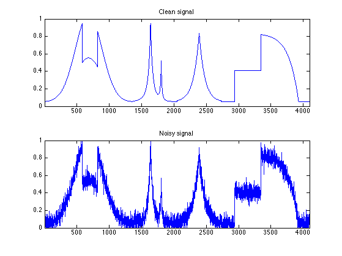
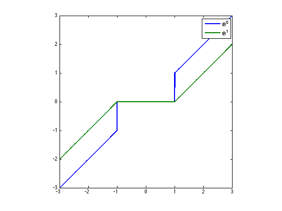
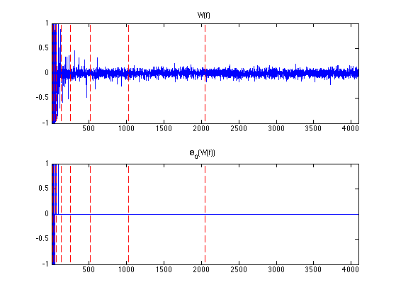
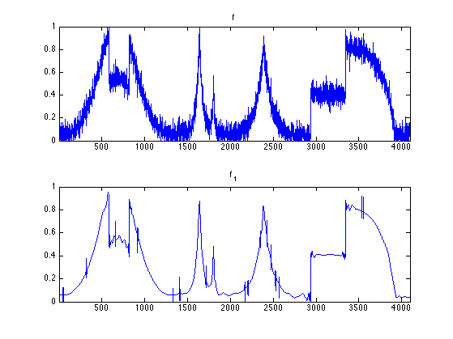
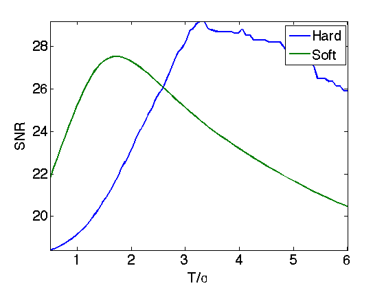
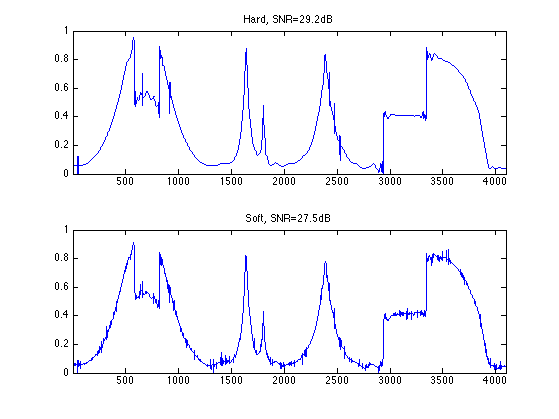
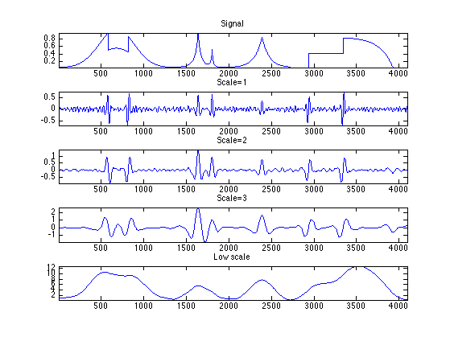
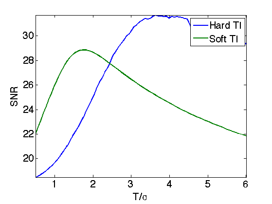
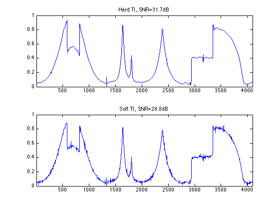

Signal Denoising with Wavelets
This tour uses wavelets to perform signal denoising using thresholding estimators. Wavelet thresholding properites were investigated in a series of papers by Donoho and Johnstone, see for instance [DonJohn94] [DoJoKePi95].
Contents
Installing toolboxes and setting up the path.
You need to download the following files: signal toolbox and general toolbox.
You need to unzip these toolboxes in your working directory, so that you have toolbox_signal and toolbox_general in your directory.
For Scilab user: you must replace the Matlab comment '%' by its Scilab counterpart '//'.
Recommandation: You should create a text file named for instance numericaltour.sce (in Scilab) or numericaltour.m (in Matlab) to write all the Scilab/Matlab command you want to execute. Then, simply run exec('numericaltour.sce'); (in Scilab) or numericaltour; (in Matlab) to run the commands.
Execute this line only if you are using Matlab.
getd = @(p)path(p,path); % scilab users must *not* execute this
Then you can add the toolboxes to the path.
getd('toolbox_signal/'); getd('toolbox_general/');
Loading a Signal and Making Noise
Here we consider a simple additive Gaussian white noise.
Size \(N\) of the signal.
N = 2048*2;
First we load the 1-D signal.
name = 'piece-regular';
f0 = load_signal(name, N);
f0 = rescale(f0,.05,.95);
Variance \(\si^2\) of the noise.
sigma = 0.05;
Generate a noisy signal \(f = f_0 + w\) where \(w \sim \Nn(0,\si^2 \text{Id})\).
f = f0 + randn(size(f0))*sigma;
Display.
clf; subplot(2,1,1); plot(f0); axis([1 N 0 1]); title('Clean signal'); subplot(2,1,2); plot(f); axis([1 N 0 1]); title('Noisy signal');
Hard Thresholding vs. Soft Thresholding
A thresholding \(\Theta : \RR^N \rightarrow \RR^N\) is a non-linear function that operates diagonaly, i.e. \[ \forall i, \quad \Theta(x)_i = \th(x_i) \] where \(\th : \RR \rightarrow \RR\) is the 1-D thresholding function.
The most important thresholding are the hard thresholding (related to \(\ell^0\) minimization) and the soft thresholding (related to \(\ell^1\) minimization).
The hard thresholding reads \[ \Theta^0_T(x)_i = \choice{ x_i \qifq \abs{x_i}>T, \\ 0 \quad \text{otherwise}. } \]
Theta0 = @(x,T)x .* (abs(x)>T);
The soft thresholding reads \[ \Theta^1_T(x)_i = \max\pa{ 0, 1-\frac{T}{\abs{x}} } x \]
Theta1 = @(x,T)max(0, 1-T./max(abs(x),1e-9)) .* x;
Display the thresholding.
t = linspace(-3,3,1024)'; T = 1; clf; plot( t, [Theta0(t,T), Theta1(t,T)], 'LineWidth', 2 ); axis('equal'); axis('tight'); legend('\Theta^0', '\Theta^1');
Wavelet Thresholding
It is possible to perform non linear denoising by thresholding the wavelet coefficients of \(f\).
Shortcut for the foward orthogonal wavelet transform \(W\) and the inverse wavelet transform \(W^{-1}=W^*\).
options.ti = 0; Jmin = 4; W = @(f) perform_wavelet_transf(f,Jmin,+1,options); Wi = @(fw)perform_wavelet_transf(fw,Jmin,-1,options);
Compute the wavelet coefficients \(x=W(f)\).
x = W(f);
Threshold the wavelet coefficients \(\tilde x=\Theta_0(x)\). Here we use \(T=3\si\).
x1 = Theta0(x, 3*sigma);
Display the wavelet coefficients \(W(f)\) and the hard thresholded coefficients \(\Theta_0(W(f))\). Note how the wavelet coefficients are contaminated by a small amplitude Gaussian white noise, most of which are removew by thresholding.
clf; subplot(2,1,1); plot_wavelet(x,Jmin); axis([1 N -1 1]); title('W(f)'); subplot(2,1,2); plot_wavelet(Theta0(W(f),T),Jmin); axis([1 N -1 1]); title('\Theta_0(W(f))');
Reconstruct from the thresholded coefficients the final estimator \(\tilde f = W^*(\tilde x)\).
f1 = Wi(x1);
Display noisy and denoised signal.
clf; subplot(2,1,1); plot(f); axis([1 N 0 1]); title('f'); subplot(2,1,2); plot(f1); axis([1 N 0 1]); title('f_1');
Given a thresholding \(\Theta\) (for instance \(\Theta^0\) or \(\Theta^1\)), one thus defines a wavelet thresholding estimator as \[ \Theta_W(f) = W^* \circ \Theta \circ W. \]
Operator to re-inject the coarse scale noisy coefficients. Improves a little bit the result of soft thresholding denoising (because of the bias).
x = W(f); reinject = @(x1)assign(x1, 1:2^Jmin, x(1:2^Jmin));
Define the soft and hard thresholding estimators.
Theta0W = @(f,T)Wi(Theta0(W(f),T)); Theta1W = @(f,T)Wi(reinject(Theta1(W(f),T)));
The denoising performance of an estimator \(\tilde f = \Theta_W(f)\) is measured using the \(L^2\) error to the (unknown) ground trust \(f_0\). One usually expresses it in dB using the SNR \[ SNR = -10\log_{10}\pa{ \frac{\norm{f_0-\tilde f}^2}{\norm{f_0}^2} }. \]
Exercice 1: (check the solution) Display the evolution of the denoising SNR when \(T\) varies. Store in fBest0 and fBest1 the optimal denoising results.
exo1;
Display the results. For 1-D signals, hard thresholding seems to outperform soft thresholding. For natural images, on contrary, soft thresholding seems to be better.
clf; subplot(2,1,1); plot(fBest0); axis([1 N 0 1]); e = snr(fBest0,f0); title(['Hard, SNR=' num2str(e,3) 'dB']); subplot(2,1,2); plot(fBest1); axis([1 N 0 1]); e = snr(fBest1,f0); title(['Soft, SNR=' num2str(e,3) 'dB']);
Translation Invariant Wavelet Transform
Orthogonal wavelet transforms are not translation invariant. It means that the processing of an image and of a translated version of the image give different results. A translation invariant wavelet transform is implemented by ommitting the sub-sampling at each stage of the transform. This correspond to the decomposition of the image in a redundant familly of \(N (J+1)\) atoms where \(N\) is the number of samples and \(J\) is the number of scales of the transforms.
The foward and backward transform algorithm is the so-called "a trou" algorithm, that was introduced in [Holsch87]. See also [Fowler05] for a review. This algorithm runs in \(O(J N)\) operations.
The invariant transform is obtained using the same function, by activating the switch options.ti=1.
options.ti = 1; W = @(f) perform_wavelet_transf(f,Jmin,+1,options); Wi = @(fw)perform_wavelet_transf(fw,Jmin,-1,options);
Compute the invariant transform.
fw = W(f);
fw(:,:,1) corresponds to the low scale residual. Each fw(:,1,j) corresponds to a scale of wavelet coefficient, and has the same size as the original signal.
nJ = size(fw,3)-4; clf; subplot(5,1, 1); plot(f0); axis('tight'); title('Signal'); i = 0; for j=1:3 i = i+1; subplot(5,1,i+1); plot(fw(:,1,nJ-i+1)); axis('tight'); title(strcat(['Scale=' num2str(j)])); end subplot(5,1, 5); plot(fw(:,1,1)); axis('tight'); title('Low scale');
Translation Invariant Wavelet Denoising
Orthogonal wavelet denoising does not performs very well because of its lack of translation invariance. A much better result is obtained by not sub-sampling the wavelet transform, which leads to a redundant tight-frame.
Translation invariant denoising using cycle spinning is introduced in [CoifDon95]. We uwe here the a trou algorithm which is faster.
Operator to re-inject the coarse scales.
x = W(f); reinject = @(x1)assign(x1, 1:N, x(1:N));
Define the soft and hard thresholding estimators.
Theta0W = @(f,T)Wi(Theta0(W(f),T)); Theta1W = @(f,T)Wi(reinject(Theta1(W(f),T)));
Exercice 2: (check the solution) Display the evolution of the denoising SNR when \(T\) varies. Store in fBest0 and fBest1 the optimal denoising results.
exo2;
Display the results.
clf; subplot(2,1,1); plot(fBest0); axis([1 N 0 1]); e = snr(fBest0,f0); title(['Hard TI, SNR=' num2str(e,3) 'dB']); subplot(2,1,2); plot(fBest1); axis([1 N 0 1]); e = snr(fBest1,f0); title(['Soft TI, SNR=' num2str(e,3) 'dB']);
Bibliography
- [DonJohn94] D. L. Donoho and I. M. Johnstone, Ideal spatial adaptation via wavelet shrinkage, Biometrika, vol. 81, pp. 425-455, 1994.
- [DoJoKePi95] Donoho, D.L., I.M. Johnstone, G. Kerkyacharian and D. Picard, Wavelet Shrinkage: Asymptopia, J. Roy. Statist. Soc. B 57 2, 301-369,1995.
- [CoifDon95] R.R. Coifman and D.L. Donoho, Translation-Invariant De-Noising, in Wavelets and Statistics, A. Antoniadis and G. Oppenheim, Eds. San Diego, CA: Springer-Verlag, Lecture notes 1995.
- [Fowler05] J. E. Fowler, The redundant discrete wavelet transform and additive noise, IEEE Signal Processing Letters, vol. 12, issue 9, pp. 629-632, 2005.
- [Holsch87] M. Holschneider, R. Kronland-Martinet, J. Morlet, and P. Tchamitchian, A real-time algorithm for signal analysis with the help of the wavelet transform, in Wavelets: Time-Frequency Methods and Phase Space, Springer-Verlag, 1989, pp. 286–297, 1987